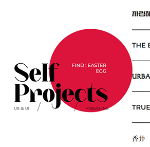

요약
- Index 및 구조 디자인
- Scroll 이벤트
- Mouse cursor 이벤트
- .EASTER_EGG
Back
✴
포트폴리오 제작에 대한 정리
#Web design #Graphic #javascript #Jquery
Portfolio 2023-07-20 ~
웹 포트폴리오 제작에 대한 기술서와 디자인 컨셉, 제작 동안의 기록을 정리하였습니다.
1. 워크플로우 구상 및 디자인
2. 카테고리와 순서, 스크롤 될 순서를 지정
3. HTML-CSS로 페이지 구축
4. 기술서와 가이드 작성 및 정리
5. jquery 스크립트를 사용한 이벤트 추가
"COSMIC DUST", 기존에 제작되었던 포트폴리오들의 디자인 테마를 이어서 컨셉을 잡고 구상을 진행하였습니다. 화이트와 공백을 주어 깨끗하고 넓은 느낌을 주고자 하였습니다.
깔끔함, 우주, 공백
#Black
Index Background
#Pale gray
Sub page Background
#Light gray
skills Background
#dc143c
Point Color
포트폴리오 페이지 내부에 넣어둔 여러가지 hidden 요소, 에스터 이그에 대한 안내와 흥미 요소들을 숨기고 동일한 포인트 컬러를 주어 확실하게 강조하고자 전체적으로 흑백을 고정했습니다.
Notted
Montserrat
Pretendard
타이틀에 사용된 폰트는 곡선이 매끄럽고 꾸밈새가 유려해 시선 주목이 큰 Notted 폰트를 사용하였고, 서브 폰트로는 심플하면서도 분위기있는 Montserrat을, 작은 텍스트에는 가독성이 좋은 Pretendard를 사용하였습니다.
- Index 및 구조 디자인
- Scroll 이벤트
- Mouse cursor 이벤트
- .EASTER_EGG
거슬리지 않을 정도의 노이즈와 텍스쳐를 사용한 Background 이미지를 베이스로 index 디자인을 구상. svg circle을 사용하여 행성의 궤도가 회전하는 모습을 염두에 두고 COSMIC이라는 이미지를 심플하게 표현하고자 함.
작업 중 깨달았는데 이미지로 만들어놓은 구조에 animation 효과를 넣어 동적인 형태로 구현하니 처음 생각한 시안만큼 만족스러운 조화를 이루지 못했다. 편집 디자인과 영상 디자인의 배치가 움직임을 고려하고 달라져야 하는 것과 비슷한 선상이라고 느꼈다. 생각해보면 웹 디자인의 레이아웃은 지류와 영상 사이의 어딘가에 존재하는 것 같다. 고정되어 있는 영역과 mouseover되는 영역, hidden으로 숨겨놓고 커서 진입시 인터랙션과 유사한 형태로 확인되는 영역을 별개로 두지 않고 구상하는 단계에서 고려할 줄 아는 것이 중요한 것 같다는 깨달음. 이를 위해서 좀 더 많이 보고 많이 생각해야 할 필요를 느꼈다.
구상 단계부터 가로 스크롤, 그리고 휠 한번에 페이지 한 장이 이동하는 스크롤 이벤트를 넣고자 했다. about 파트의 what am i 와 skills 영역이 가로 스크롤로 이어지면 보기가 더 좋을거라는 판단을 해서였는데-그 또한 오판이었음- container를 제작하고 flex를 사용하여 가로 스크롤을 구현하는 데까지 성공하였으며, 스크롤 시 한 페이지가 넘어가는 script를 작성해 적용했다.

순조롭다 싶더라니 아니나 다를까 문제가 발생했다. 가로 스크롤 영역에 도달하면 매끄럽게 넘어가지 않고 애매한 중간 지점에서 스크롤이 멈추기를 반복했다. 그 탓에 다음 페이지의 스크롤도 적용되지 않기는 매한가지였다. 그리고 문득 떠오르는 깨달음...
script가 height 값을 기준으로 이동하도록 작성되었고 그에 따라 가로 스크롤에서도 해당 section의 세로 높이 값만큼 horizontal 이동하기 때문에 애매한 중간 지점에서 멈춘 것이다.
script를 다르게 작성하는 방법이 있었겠지만 디자인이 마음에 들지 않았고 해결 방법이 썩 마땅치 않았던 탓에 그냥 가로 스크롤을 삭제하고 기존 스크롤 방식을 따르는 쪽을 골랐다.

#R.I.P 가로 스크롤
main page를 후반에 수정했기 때문에 sub page의 디자인이 먼저 제작되었는데, 각 페이지에 .easter_egg를 숨겨놓던 중에 떠오른 아이디어.
포트폴리오의 메인 페이지에서도 숨겨진 영역을 몇가지 두면 재미있겠다는 생각이 들었다. 이스터 에그처럼 티나지 않게 숨기는 것은 아니고, 적절한 유도를 통하여 숨겨진 텍스트와 정보 등을 작성하여 발견하게 하는 것도 제법 즐겁지 않을까? 전체적인 디자인 자체를 흑백 레이아웃을 깨끗하게 정리하는 쪽으로 작업했기 때문에 이런 작은 인터랙션 요소를 주는 것이 페이지를 내리면서 흥미를 끊이지 않게 할 수 있을 것이라는 생각이 들었다. 무엇보다도 포트폴리오야 말로 나의 아이덴티티와 성격, 제작자의 요소를 보여주는 것이라고 생각했기 때문에 이것을 하나의 컨셉처럼 작용시킬 수 있겠다는 판단을 내렸다.
마우스를 따라다니는 커서를 우선 작성했다. 영상을 작업할 때에도 키프레임에 ease-in-out의 베지어를 적용해 자연스러운 움직임과 생동감을 주는 쪽을 선호해서 마우스의 이동을 반 박자 늦게 따라올수 있도록 시간을 조정했다. 또한 커서가 마우스의 이동보다 늦기 때문에 선택하는 영역을 알 수 있도록 하기 위해 기본 커서는 지우지 않은 채로 두었다.
Background 영역에 배경의 텍스쳐를 사용하려 했는데, 전체적으로 유사한 텍스쳐의 이미지를 많이 사용했다보니 어떤 페이지에서는 커서가 있더라도 한 눈에 확인하기 어려울 듯 했다. 고민끝에 포인트가 될 컬러를 지정해 흑백의 페이지에 강조를 주기로 결정했다.
.active를 작성한 뒤 스크립트를 작성하여 지정한 위치에 도달 시 커서 이미지가 확대되고, 그를 통해 숨겨놓은 텍스트가 그 안에 비춰지도록 만들었다.
작업을 진행하며 메인과 서브 페이지의 레이아웃을 깔끔하게 만드는 데에 집중했는데 그 부분에 너무 집착하다보니 오히려 읽는 재미가 없어졌다는 생각이 들었다. 문득 사소하게 웃을거리를 생각지 못한 발견을 할 수 있으면 좋겠다는 생각이 들어 FIND:EASTER EGG를 메인 페이지의 서브타이틀에 숨겨놓고 서브 페이지를 읽는 동시에 예고된 이스터 에그를 발견하도록 유도한다면 제법 재미있는 구조가 될 거라는 생각이 들었다. 이런 류의 서프라이즈를 좋아하기 때문에, 생각난 즉시 구조를 바꾸어 제작 당시의 마음을 표현하는 이미지 같은 것을 소소하게 넣어두었다.
#URBANIC30 페이지의 이스터에그
포트폴리오를 어떤 연유로 보게 되었더라도 읽는 동안 소소한 즐거움을 느끼셨길 바란다.
그 동안 작성해온 포트폴리오 디자인의 컨셉은 테마 컬러를 몇 가지 정해 그 셋을 조화롭게 꾸며내는 인상이 강했다. 그래서 이번 웹 포트폴리오의 디자인을 구상할 때에도 다양한 컬러 팔레트를 고민해보았는데 역시 가장 편안하고 좋아하는 컬러를 고르는 것이 정답이었는지도 모르겠다.
아예 포트폴리오 사이트의 시작부터 스스로 구조와 디자인을 생각하고 프로젝트를 어떤 식으로 쌓아 올려나갈 것인지, 무엇을 중심으로 보여주고 무엇을 쳐낼 것인지 하나부터 열까지 직접 고민하고 생각하는 것 자체가 새롭고도 중요한 작업이었다. 무엇보다 어떤 것에도 정답이 없다는 깨달음을 많이 얻게 된 것 같다. 오답이 있을지언정 정해진 정답은 없으니, 여러 방향으로 가능성과 해결책을 만들 수 있다는 것을 지속적으로 깨닫는 시간이었다. 내가 할 줄 아는 것과 새롭게 할 수 있게 된 것의 결합을 매 순간 눈으로 확인하는 것 역시 고무적인 일이었다. 앞으로도 이 순간의 마음을 곱씹으며 발전하고 싶다.
UP TO